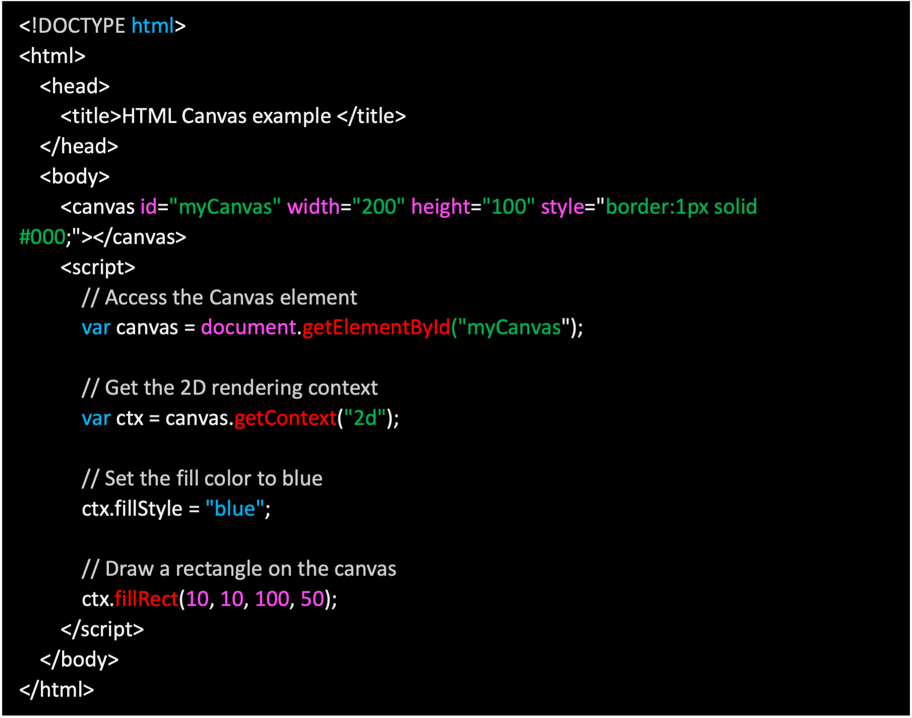
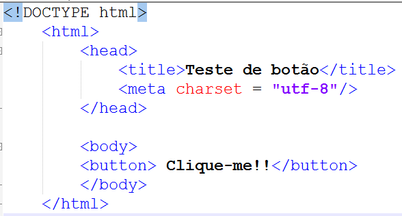
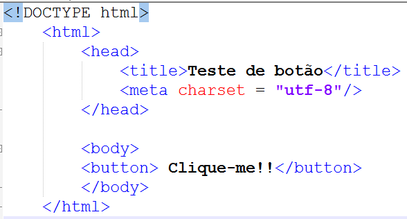

Uma pagina de teste em HTML e uma estrutura simples de codigo que serve para verificar o funcionamento de diferentes elementos e componentes de uma pagina web. Ela pode ser criada com a finalidade de testar a formacao, estrutura e funcionalidade de codigos HTML, CSS e ate mesmo Javascript. Para criar uma pagina basica de teste, comeca-se com a declaracao do tipo de documento (DOCTYPE html), seguido pela tag html, que envolve todo o conteudo da pagina. Dentro da tag head, colocam-se informacoes como o titulo da pagina, que e exibido na aba do navegador, alem de links para arquivos CSS ou meta-informacoes. O conteudo visivel ao usuario e colocado dentro da tag body, onde podemos adicionar elementos como h1 para titulos, p para paragrafos e a para links. Tambem e comum incluir imagens e tabelas para verificar como esses elementos sao renderizados. O objetivo de uma pagina de teste e garantir que todos os componentes funcionem corretamente antes de implementar algo mais complexo.
 

© 2025 Samuel Pires | Professor do Curso de Lógica para Desenvolvimento Web do Projeto Tocantins Digital/Brasil Digital